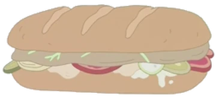

Subway Sub
Ingredients
- Bread
- Salami
- Pepperoni
- Mozzarella
- Lettuce
- Cucumbers
- Tomatoes
- Black Olives
- Ranch
Steps
- Slice your bread in half and lay them side by side
- Begin laying down the salami, pepperoni, and the mozzarella
- Place sub in a toaster until it's slightly toasted and the cheese has melted
- Lay down your lettuce, cucumbers, tomatoes, and black olives
- Drizzle your ranch on top
- Bring the two slices together
